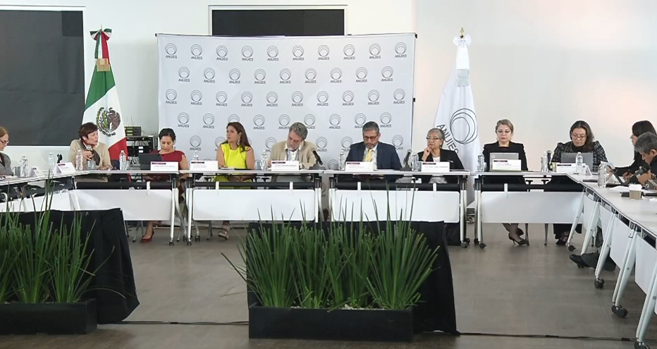
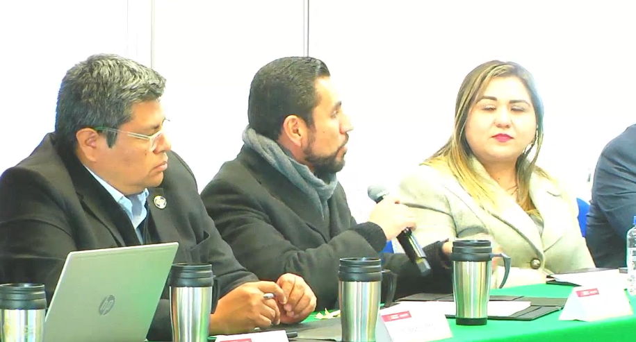
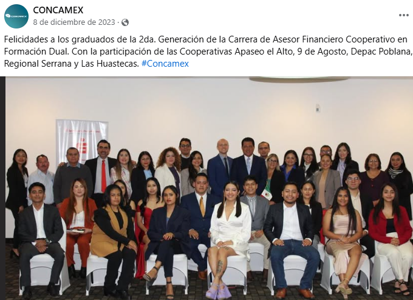
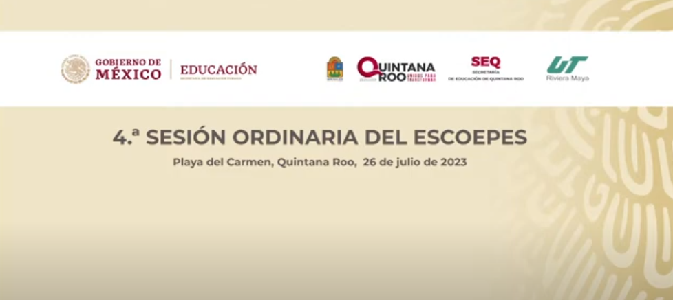
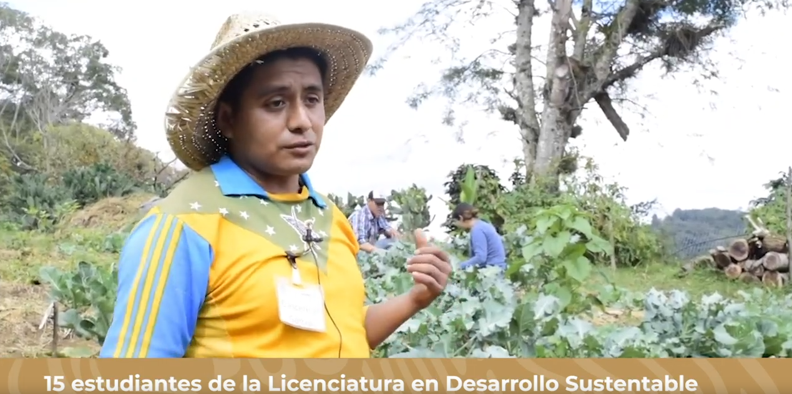
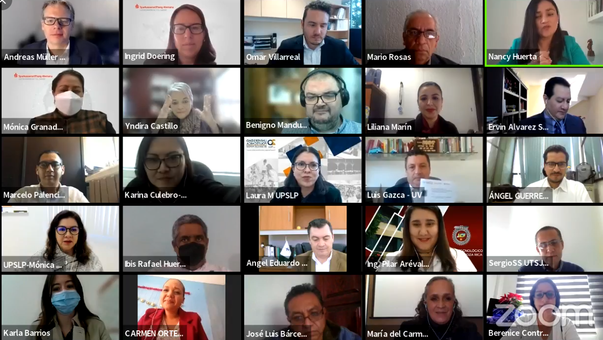
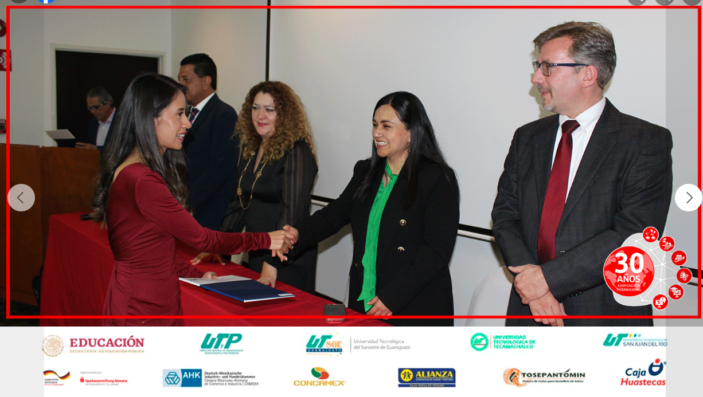
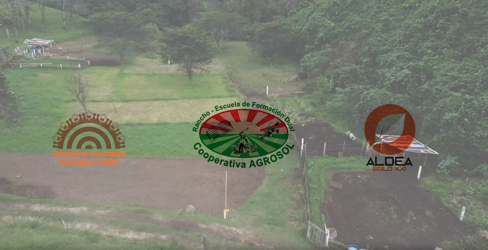
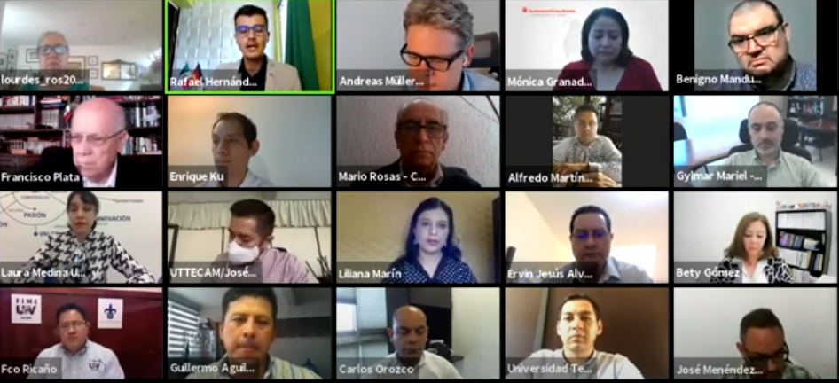
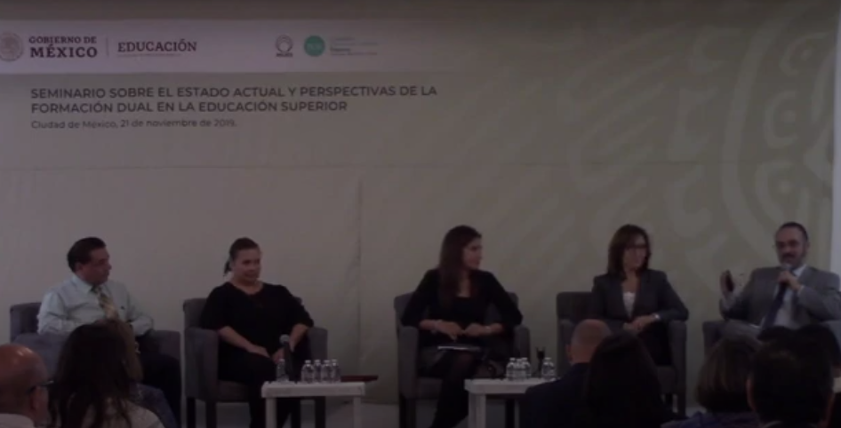

Login sesión virtual
¿Dónde estamos en la Educación Superior?
La educación dual juega un papel fundamental como espacio de interrelación formativa-productiva en el marco de la comunidad, y se inscribe como un elemento innovador que despliega el Gobierno de México por todo el país. Por ello, desde la Secretaría de Educación Pública se promueve la educación dual del tipo superior, desde un enfoque humanista, territorial e intercultural que se ha reflejado en avances en los ámbitos normativo, institucional y de operación, los cuales se refieren a continuación.
2024
En septiembre se llevó a cabo la 1ª edición de la Semana de Educación Dual en coordinación con diversos aliados de los sectores gubernamental, empresarial, académico y de la cooperación alemana, así como la entrega del Premio de Excelencia Dual.
En junio durante la 12ª Sesión Ordinaria del Consejo Nacional para la Coordinación de la Educación Superior (CONACES) se presentó el “Marco General para la Educación Dual del Tipo Superior” y fue validado para su difusión.
En abril durante la 4ª edición de los Foros de Vinculación se abordó el tema de Educación Dual como una pieza clave para el desarrollo dé los sectores estratégicos del país.
En enero durante la 5ª Sesión Ordinaria del Espacio de Deliberación de las Comisiones Estatales para la Planeación de la Educación Superior o Instancias Equivalentes (ESCOEPES), se planteo incorporar educación superior en los comités estatales de educación dual de media superior.


2023


En diciembre se gradúa la segunda generación de la carrera de TSU en Asesor Financiero Cooperativo bajo el enfoque de educación dual, quienes que también se certificaron en el estándar EC1253..
En julio como parte de la agenda de la 4ª Sesión Ordinaria del ESCOEPES, se compartieron experiencias de las IES en torno a la Educación Dual.
En abril durante la tercera edición de los Foros de Vinculación se abordaron buenas prácticas de educación dual de las Instituciones de Educación Superior.
2022
En diciembre se gradúa la primera generación de la carrera de TSU en Asesor Financiero Cooperativo bajo el enfoque de educación dual, quienes que también se certificaron en el estándar EC1253..
En octubre se publica el Acuerdo Secretarial 20/10/22 en el que se establece la educación dual como una modalidad y opción educativa del tipo superior.
En septiembre se llevó a cabo el seminario mexicano alemán sobre educación dual que contempló por primera vez a los dos tipos educativos: media superior y superior.
En julio se llevó a cabo la graduación del piloto de educación dual intercultural, entre la la Universidad Intercultural del Estado de Puebla (UIEP) y la Cooperativa Agrosol.
En mayo, el Tecnológico Nacional de México (TecNM) emite la actualización de su Modelo de Educación Dual.

2021



En diciembre se gradúa la primera generación de la carrera de TSU en Asesor Financiero Cooperativo bajo el enfoque de educación dual, quienes que también se certificaron en el estándar EC1253. .
En diciembre se certificó a 78 personas en los Estándares del CONOCER de las funciones de las figuras operativas de la educación dual: gestor de vinculación, tutor académico e instructor formativo.
En noviembre durante la 2ª Sesión Ordinaria del Consejo Nacional para la Coordinación de la Educación Superior (CONACES) fue presentado el “Marco General para la Educación Dual del Tipo Superior en México” para conocimiento y fortalecimiento de las autoridades educativas estatales
En agosto dio inicio el programa piloto de educación dual intercultural con 16 estudiantes de los programas de licenciatura en desarrollo sustentable e ingeniería forestal de la Universidad Intercultural del Estado de Puebla (UIEP) en la Cooperativa Agrosol.
En abril es publicada la Ley General de Educación Superior en la que se establece la educación dual como una modalidad educativa del tipo de educación superior, en su artículo 12.
2020
En el último trimestre del año inició un proceso de capacitación piloto a las figuras operativas de la educación dual, bajo los estándares desarrollados en el marco del CONOCER, logrando capacitar 160 personas de los diferentes subsistemas educativos..
En febrero se publica en el DOF el estándar de competencia laboral EC1253 "Asesoría y promoción de productos, servicios y soluciones financieras en instituciones de crédito y ahorro" y a partir de este insumo se inician los trabajos para la creación de la carrera de TSU en Asesor Financiero Cooperativo, diseñada con un enfoque hacia la educación dual.

2019

En noviembre se realizó el primer seminario nacional sobre educación dual en el tipo de educación superior con la participación de cerca de 200 IES . Entre los resultados que se obtuvieron se identificó la situación en que se encontraba la educación dual, así como los temas de atención prioritaria y las líneas de acción para fortalecerla..